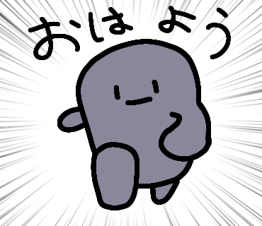
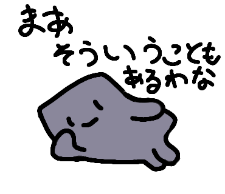
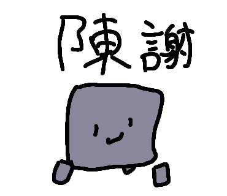

ある日のぬりかべ
夜道を歩く人の前に、ぬりかべはすっと現れました。

驚いた人も、ぬりかべのやわらかな体に触れると安心します。まるでこんにゃくのようなやさしい感触。
ぬりかべは無言のまま、ただ一緒に歩くだけ。それだけで人の心をあたためてくれるのです。
見た目はかたい壁。でも、気分によってはこんにゃくのようにやわらかくなることも。

触ってみると、もっちりぷにぷに。思わず何度も触りたくなる、不思議な魅力を持っています。
話すことは少ないけれど、人が困っているときにはそっと寄り添う。

まるでやさしい友達のように、静かに支えてくれる存在。
無口だからこそ、ぬりかべのあたたかさが心にしみわたります。